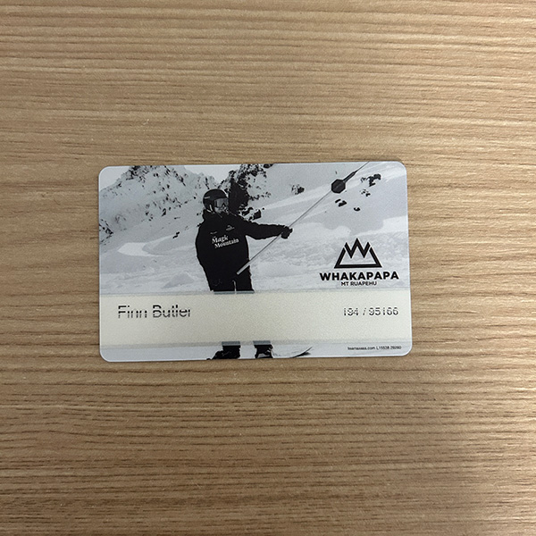
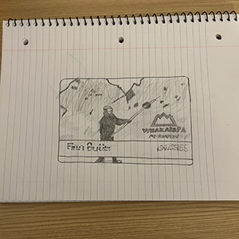
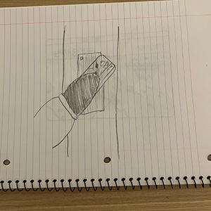

The item I have selected is my lift ticket from the Whakapapa Ski Field on Mount Ruapehu in New Zealand.
The card is a rectangle with curved corners and is about the same size as a driver's license. It is semi-rigid and able to be flexed between my hands. The surface is glossy and reflects lights. On the surface of the card, a black and white photo of a snowboarder is printed, along with my name and the logo for the ski field.
The card was dispensed by a machine in the ski lodge at the base of the mountain. The machine may have been faulty, or running out of ink, as my printed name has blank lines, where ink is absent, running through it. I used the card to gain entry to the ski lift that would take me up the mountain. I am getting rid of this card because I am no longer in New Zealand, and I will likely not return soon
This was the card I received when I went snowboarding for the first time. It was mid-August (winter in the southern hemisphere), during my semester abroad in New Zealand. I had just traveled four and a half hours in a rental car from Auckland, where I was studying, to Mount Ruapehu, New Zealand's largest active volcano. I was traveling with two other exchange students, both from Denver, Colorado. Being from Colorado, they were well-experienced in both snowboarding and skiing, and they offered to teach me the basics.
They assured me snowboarding was much easier than it looked--I was doubtful.
We made our way up the winding roads of the mountain, taking in the surrounding landscape as more of it revealed itself the higher we climbed. Finally, at the base of the ski field, we were able to rent our gear and I received the card I present now. With card in gloved hand, I soon tackled the craggy and highly technical bunny hill with the Coloradans as my guides.
While I ultimately didn't become a snowboarding master that weekend, I left with great memories, the pride of undertaking something new, and my mountain pass, which I now must part with.
Day passes for the Whakapapa Ski Field are not currently priced for the 2026 season, but season passes for adults are currently retailing at $699 NZD. (Whakapapa)
At its tallest point, Mount Ruapehu stands at 9,177 feet and its last reported period of heightened volcanic activity was in 2022. (NASA)
The access cards are produced and managed by a company headquartered in Austria, called Axess, that provides admissions systems for ski resorts around the world. (Axess)